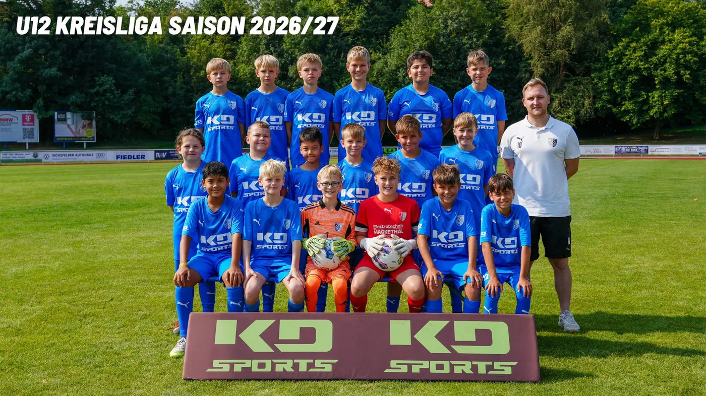

SC Heiligenstadt U12 – Der Kader 2026/27

Kreisliga – Tabelle
Inhalt von FuPa Hier zeigen wir die Tabelle von FuPa. Beim Laden überträgt dein Browser Daten wie die IP-Adresse an die FuPa GmbH. Datenschutz bei FuPa
Kreisliga – Spielplan
Inhalt von FuPa Hier zeigen wir den Spielplan von FuPa. Beim Laden überträgt dein Browser Daten wie die IP-Adresse an die FuPa GmbH. Datenschutz bei FuPa
Verbandsliga – Tabelle
Inhalt von FuPa Hier zeigen wir die Tabelle von FuPa. Beim Laden überträgt dein Browser Daten wie die IP-Adresse an die FuPa GmbH. Datenschutz bei FuPa
Verbandsliga – Spielplan
Inhalt von FuPa Hier zeigen wir den Spielplan von FuPa. Beim Laden überträgt dein Browser Daten wie die IP-Adresse an die FuPa GmbH. Datenschutz bei FuPa
Nächste Spiele
- 12:30Sa, 31.10.KreispokalJFV Eichsfeld-Wipperaue II:1. SC 1911 Heiligenstadt IIIAuswärtsZum Spiel JFV Eichsfeld-Wipperaue II gegen 1. SC 1911 Heiligenstadt III
- 12:30Sa, 07.11.Kreisliga1. SC 1911 Heiligenstadt III:TSV Aufbau Heiligenstadt IIHeimspielZum Spiel 1. SC 1911 Heiligenstadt III gegen TSV Aufbau Heiligenstadt II
- 10:00Sa, 10.04.Kreisliga1. SC 1911 Heiligenstadt III:SG SV 1911 Dingelstädt IIHeimspielZum Spiel 1. SC 1911 Heiligenstadt III gegen SG SV 1911 Dingelstädt II
- 10:30Sa, 17.04.KreisligaSV Bernterode:1. SC 1911 Heiligenstadt IIIAuswärtsZum Spiel SV Bernterode gegen 1. SC 1911 Heiligenstadt III
- 12:00Sa, 24.04.Kreisliga1. SC 1911 Heiligenstadt III:JFV Eichsfeld-WipperaueHeimspielZum Spiel 1. SC 1911 Heiligenstadt III gegen JFV Eichsfeld-Wipperaue
- 11:00Sa, 08.05.Kreisliga1. FC Eichsfeld IV (U11):1. SC 1911 Heiligenstadt IIIAuswärtsZum Spiel 1. FC Eichsfeld IV (U11) gegen 1. SC 1911 Heiligenstadt III
- 12:30Sa, 29.05.Kreisliga1. SC 1911 Heiligenstadt III:SG Blau-Weiß ErshausenHeimspielZum Spiel 1. SC 1911 Heiligenstadt III gegen SG Blau-Weiß Ershausen
- 10:30So, 13.06.KreisligaTSV Aufbau Heiligenstadt II:1. SC 1911 Heiligenstadt IIIAuswärtsZum Spiel TSV Aufbau Heiligenstadt II gegen 1. SC 1911 Heiligenstadt III
Tabelle und Kader auf fussball.deAlle Termine
Quelle: www.sc1911-heiligenstadt.de · Stand 06.10.2026